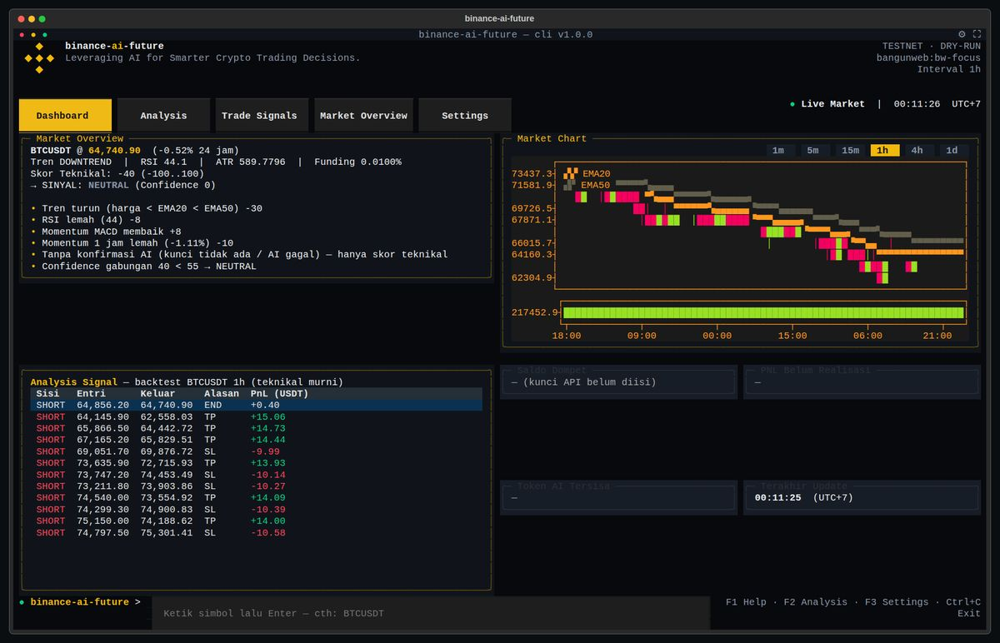
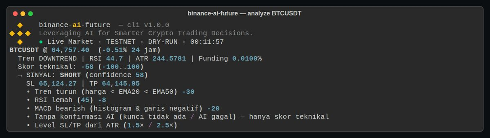
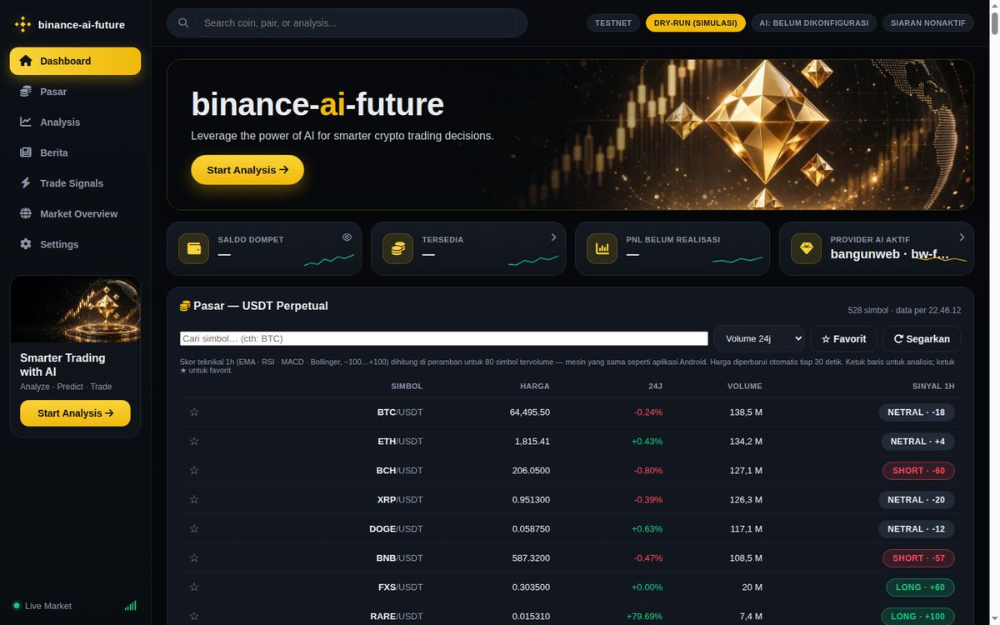
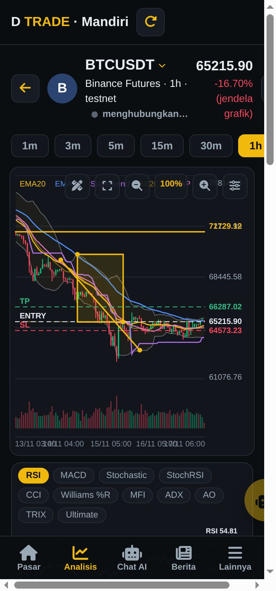
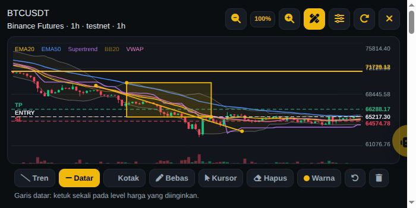
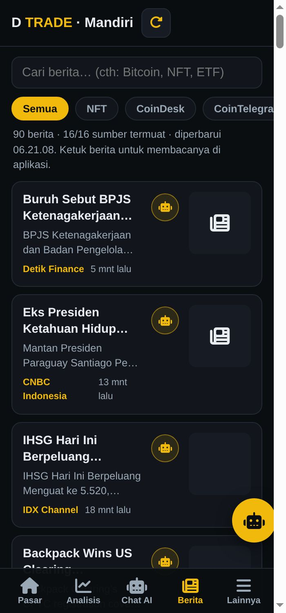
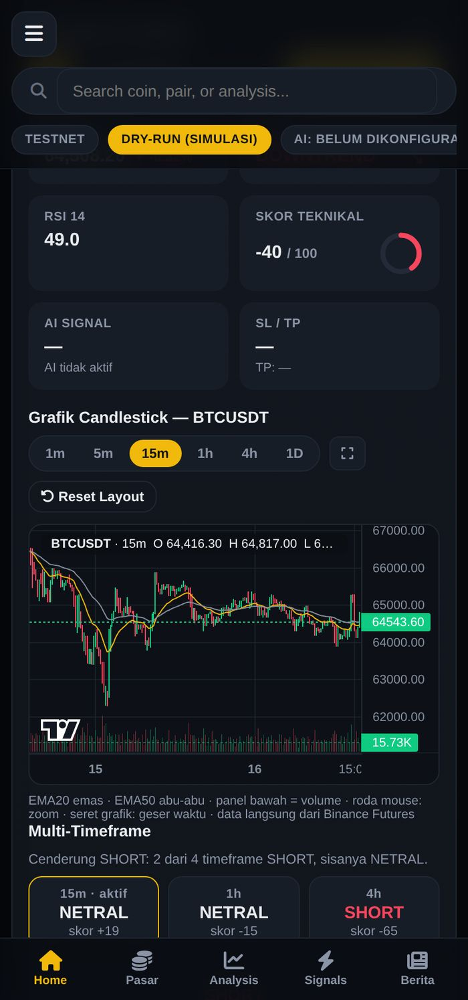

AI Market Intelligence
Analisis teknikal dan konfirmasi AI untuk membantu memahami kondisi market sebelum mengambil keputusan.
Satu ekosistem analisis Binance Futures dengan 12 indikator teknikal yang dikonfirmasi AI. Tersedia melalui CLI, Web Dashboard, dan aplikasi Android.


Dari pemindaian market sampai evaluasi risiko — satu mesin analisis yang sama, dapat diakses dari mana saja.
Analisis teknikal dan konfirmasi AI untuk membantu memahami kondisi market sebelum mengambil keputusan.
Monitoring market, grafik, posisi, dan hasil analisis dalam satu tampilan yang rapi dan cepat.
Pengelolaan risiko terstruktur: Stop Loss, Take Profit berbasis ATR, dan kontrol eksekusi yang ketat.
Akses yang sama melalui terminal CLI, browser, dan aplikasi Android — di meja kerja maupun di perjalanan.
Dashboard terminal interaktif dengan monitoring market, analisis teknikal, hasil backtest, dan perintah trading — ringan, cepat, dan selalu menampilkan status mode TESTNET · DRY-RUN.


analyzeSkor, arah sinyal, level SL/TP dari ATR, dan alasan di balik skor.Pantau market, analisis chart, evaluasi sinyal AI, dan kelola aktivitas trading melalui satu dashboard — dilindungi token login, dengan panel yang bisa digeser dan diubah ukurannya.


Akses analisis market dan berbagai fitur D TRADE langsung melalui smartphone Android — geser galeri untuk melihat tampilannya.






D TRADE bekerja penuh tanpa server — dan menjadi jauh lebih kuat saat terhubung ke server Binance AI Future milikmu.
| Kemampuan | Terhubung | Mandiri |
|---|---|---|
| Server pribadi diperlukan | Ya | Tidak |
| Analisis AI | Ada | Tidak ada |
| Saldo & posisi akun | Ada | Tidak ada |
| Eksekusi order | Sesuai mode server | Tidak ada |
| Siaran sinyal Telegram | Ada | Tidak ada |
| Saham IDX & global | Tidak ada | Ada |
| Kunci API tersimpan di HP | Tidak pernah | Tidak pernah |
Delapan modul inti yang bekerja bersama di setiap platform.
12 indikator teknikal — EMA, MACD, ADX, Supertrend, RSI, Stochastic, Bollinger, ROC, VWAP, pola candle, support/resistance — dirangkum menjadi skor −100…+100.
AI provider mengevaluasi sinyal teknikal: mengonfirmasi, memveto, atau menyarankan level SL/TP — provider & model bisa diganti tanpa restart.
Analisis serentak di 15m, 1h, 4h, dan 1d dengan catatan konfluensi — selaras, cenderung, atau terbelah.
Rasio risk/reward minimum, SL/TP berbasis ATR, dan mode dry-run/testnet sebagai pengaman bawaan.
Pemindaian 528 simbol USDT perpetual sekaligus, diurutkan dari sinyal teknikal terkuat.
Uji aturan strategi pada data historis dengan fee dan aturan SL/TP yang sama seperti live.
Berita crypto dari belasan sumber RSS terkurasi, menemani setiap keputusan analisis.
Sinyal terkonfirmasi AI disiarkan otomatis sebagai foto grafik + caption ke channel Telegram.
Android, Web Dashboard, atau CLI — sesuai caramu bekerja.
Gunakan integrasi Binance yang tersedia; mode Mandiri cukup dengan internet.
Evaluasi 12 indikator teknikal dan kondisi market simbol pilihanmu.
Di mode server, AI memberikan konfirmasi atau penolakan sesuai konfigurasi.
Periksa rencana Entry, SL, TP, dan rasio Risk/Reward sebelum bertindak.
Pantau hasil analisis dan aktivitas trading dari platform mana pun.
Eksekusi order hanya terjadi bila kamu menjalankannya dan mode server mengizinkan — bawaan pabriknya testnet + dry-run. Mode Mandiri tidak mengeksekusi order sama sekali.
Tiga jalan masuk — pilih yang paling sesuai. Versi saat ini: D TRADE v1.27.0 · server default testnet + dry-run.
Unduh APK rilis resmi, pasang, dan langsung gunakan mode Mandiri. Hubungkan ke server kapan pun kamu siap.
Download APK v1.27.0.env.example ke .env dan isi konfigurasi.python run.py web (atau image Docker GHCR)..env yang sama).python run.py cli untuk dashboard.analyze, scan, backtest.Jelajahi source code, pelajari arsitektur, dan ikut berkontribusi mengembangkan Binance AI Future.